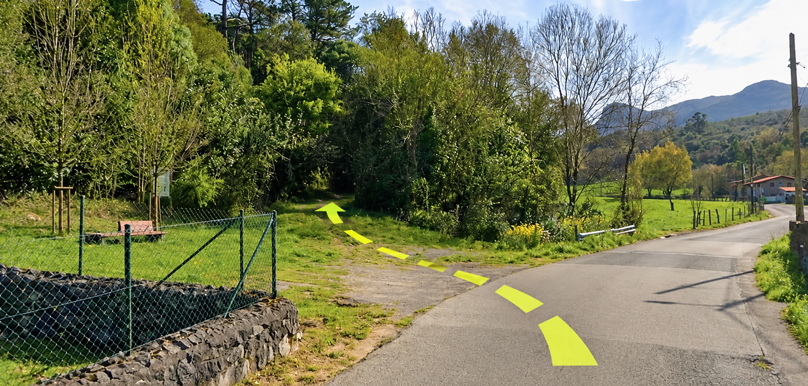
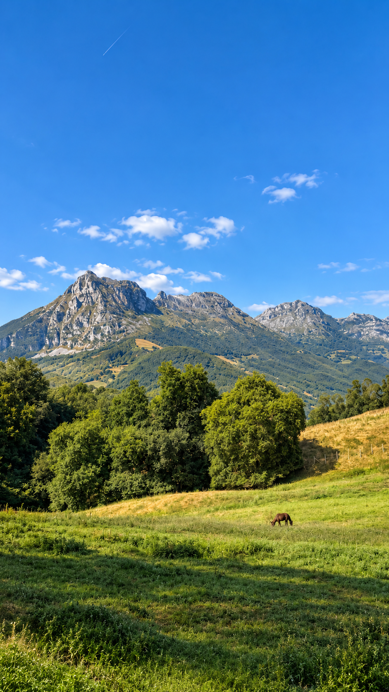
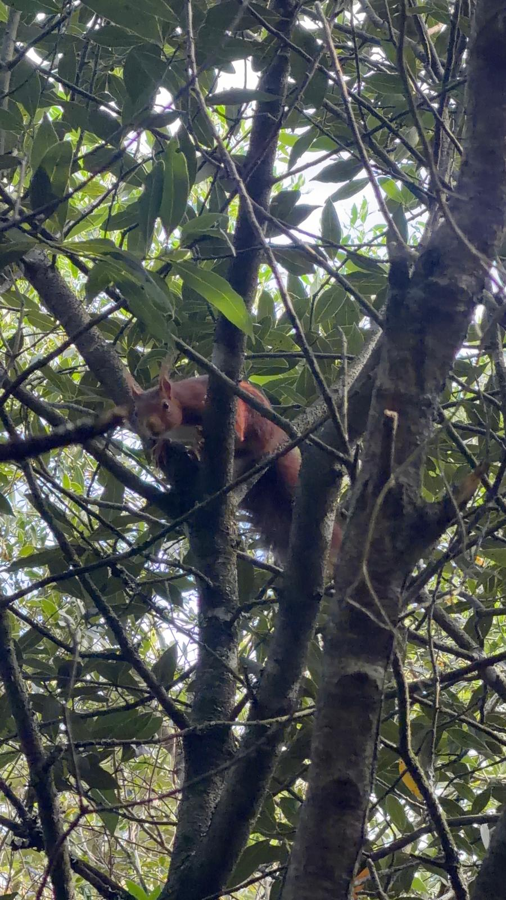
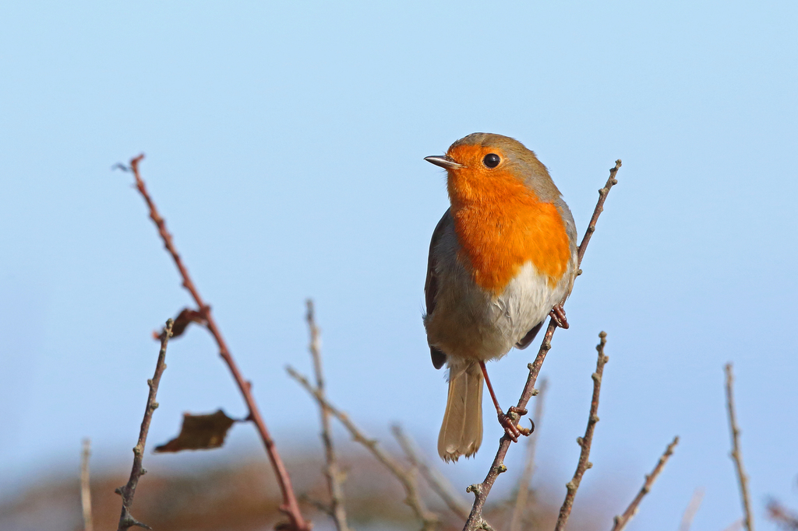
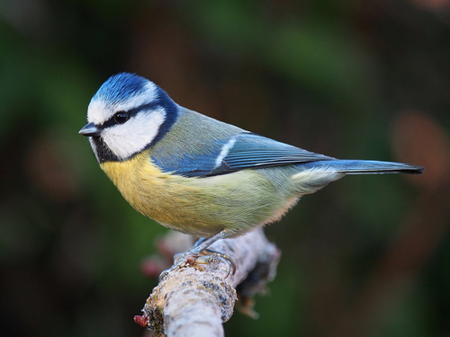
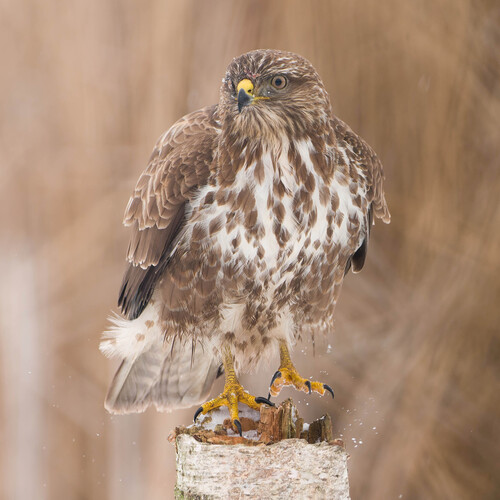
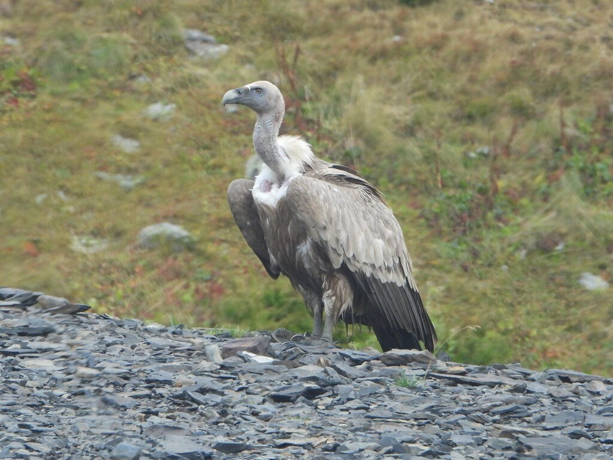
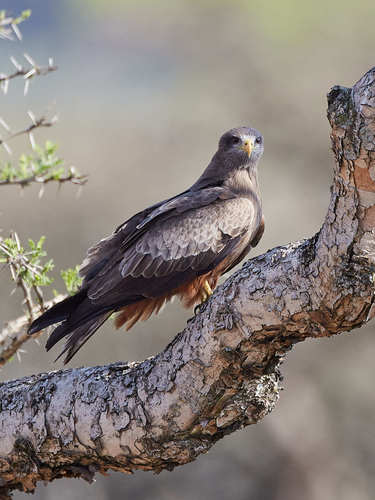

PUNTOS DEL RECORRIDO
Lugares que descubrirás durante la ruta
EL RECORRIDO

PAISAJE RURAL
Y NATURALEZA
Guardamino conserva la esencia del paisaje ganadero tradicional: prados, huertas y fincas entre manchas de bosque y encinar cantábrico en las laderas que rodean la comarca.
PRADOS, HUERTAS Y ENCINAR
Esta ruta nos acerca a uno de los paisajes más rurales de Ramales. A lo largo del recorrido caminaremos entre casas, muros y fincas donde la actividad agroganadera ha dejado su huella durante generaciones.
Los prados ocupan buena parte de las fincas y son uno de los elementos que mejor representan el paisaje ganadero tradicional. Junto a ellos todavía se conservan pequeñas huertas destinadas al consumo propio. Un paisaje abierto que contrasta con las manchas de bosque y encinar cantábrico que aparecen en las laderas circundantes.

En las diferentes fincas aparecen ejemplares de roble, fresno y castaño, árboles ligados al paisaje tradicional de la comarca. A media distancia, sobre las laderas de las montañas, pueden distinguirse manchas de encinar cantábrico.
MIRA AL CIELO

Es muy fácil encontrar pequeñas aves como petirrojos, herrerillos y cornejas. Sobre los prados también es habitual ver rapaces planeando: busardos ratoneros, buitres leonados y milanos.
Durante el recorrido encontraremos también animales domésticos como vacas, burros, perros o gallinas. Pero esta es también una zona donde pastan mamíferos silvestres como corzos, zorros, jabalíes, garduñas, erizos y varios roedores.

Una de las aves más características del encinar cantábrico. Su canto melodioso acompaña todo el paseo.

Pequeño pájaro muy activo, inconfundible por su capucha azul. Habitual en setos y jardines de toda la comarca.

La rapaz más común de los prados. Planea en círculos sobre los pastos en busca de pequeños mamíferos.

Especie característica de este tramo de la ruta.

Rapaz migratoria presente en primavera y verano. Reconocible por su cola levemente ahorquillada.
INFORMACIÓN ÚTIL
 Zona Picnic
Zona Picnic Parque infantil
Parque infantil Apta para niños
Apta para niños Calzada compartida
Calzada compartida Apta para bicicletas
Apta para bicicletas Recurso hídrico
Recurso hídrico Restaurante
Restaurante Apta para carritos
Apta para carritos¿LISTO PARA CAMINAR?
SEGUIR LA RUTA →